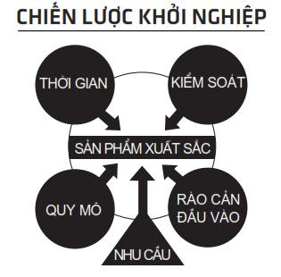

Một kẻ khôn ngoan không mắc sai lầm ngớ ngẩn nào.
– Goethe
CÁC HUYỀN THOẠI VỚI TỶ LỆ THẤT BẠI 7/10
Tôi bắt đầu kinh doanh từ khi còn là một đứa trẻ. Tuy nhiên, kinh doanh ở đây không phải là với một xe bán nước dạo thường thấy mà là một buổi biểu diễn ảo thuật cho trẻ con hàng xóm xem. Lúc đó, tôi rất đam mê các trò ảo thuật. Vài ngày trước buổi diễn, tôi thông báo cho đám bạn của mình. Tôi dán quảng cáo khắp nơi: hộp thư, buồng điện thoại công cộng, trạm đón xe buýt. Để chuẩn bị, tôi đọc cả chồng sách về ảo thuật. Tôi dùng hết số tiền tiết kiệm ít ỏi mua các dụng cụ.
Rồi buổi diễn bắt đầu, tôi rất háo hức muốn trổ tài cho mọi người xem.
Nhưng sao chỉ có lèo tèo vài ba đứa hàng xóm kế bên đến xem nhỉ!? Anh chị tôi cũng chẳng có mặt. Thế là hết, ước mơ khởi nghiệp với ảo thuật xem như phá sản.
Gặm nhấm nỗi buồn thất bại. Tiền vé chỉ kiếm được vài xu chả đáng là bao so với số tiền tôi bỏ ra. Chưa kể là mất biết bao thời gian tôi bỏ ra. Đó là thất bại đầu tiên của tôi.
Ở đại học, tôi lại tiếp tục thất bại.
Một lần nữa, đam mê dẫn lối.
Lúc đó, tôi rất thích hip hop, tôi bàn với đám bạn tổ chức một buổi nhạc hội tại sân bóng của trường. Chúng tôi chi đậm để mời một DJ nức tiếng ở Chicago đến. Chúng tôi dán tờ rơi khắp nơi, thậm chí còn trả tiền quảng cáo trên tờ báo của trường. Vào ngày sự kiện diễn ra, tôi lại một lần nữa nếm mùi thất bại.
Chúng tôi mở cửa đón khách. Hy vọng nhìn thấy cả đám đông đang chờ xếp hàng để vào. Nhưng chẳng có ma nào cả. Chúng tôi ráng chờ.
Chỉ có một vài thành viên của nhóm chúng tôi đến, nhưng không phải do tự nguyện mà bị buộc phải tham gia. Sau vài phút hoàn thành nhiệm vụ, chúng nhanh chóng rời đi. Một số khác nhìn thấy quá vắng vẻ nên cũng rời đi. Một số còn đòi hoàn tiền.
Rồi anh chàng DJ đến. Chúng tôi gặp nhau trong phòng giữ đồ. Tôi thất vọng chỉ cho anh ta khán phòng trống trơn. Anh ta sững người: “Cái quái gì thế này?”.
Tôi không biết phải nói sao. Tôi buột miệng an ủi: “Đừng lo, mọi người đang đến”. Anh ta gật gù, tiến đến khán đài và bắt đầu thử phối vài bài. Ba mươi phút sau, chẳng có ma nào đến cả.
Chúng tôi thông báo anh ta có thể rời đi. Rất vội vã, chúng tôi trả lại tiền cho một số khán giả và nhanh chóng đóng cửa.
Lại một lần nữa thất bại.
Chưa hết, tôi tiếp tục thất bại sau khi tốt nghiệp đại học. Rất rất nhiều lần không thể kể hết.
Hàng năm có hàng ngàn người khởi khởi nghiệp và bay bổng với ước mơ tự làm chủ. Nào là mở quán cà phê, nào là viết sách dạy làm sao để có sáu múi, lúc nào cũng đầy rẫy người muốn thử khởi nghiệp. Kết cục là, hàng năm có vô số thất bại thảm hại. Có người nói 90% các công ty khởi nghiệp thất bại trong năm năm đầu tiên. Nhưng tôi chắc rằng dù cho con số thống kê là như thế nào, bạn sẽ gặp thất bại chẳng sớm thì muộn.
Câu hỏi là: Bạn tiếp tục hay quay về cập nhật hồ sơ xin việc?
Bạn thấy đấy, khởi nghiệp giống như là chơi bóng chày. Kiểu gì cũng có lúc đánh trật. Người giỏi lắm cũng chỉ đánh trúng 3 trên 10. Bạn có thể thất bại 7/10 lần nhưng vẫn được xem là huyền thoại. Chỉ cần đúng một lần là bạn đã có thể hoàn thành ước mơ khởi nghiệp.
Thất bại là một phần của cuộc chơi, giống như trong bóng chày vậy.
Hãy suy nghĩ về điều đó.
Điều gì sẽ xảy ra nếu Steve Jobs bỏ cuộc sau thất bại với Macintosh? Walt Disney bỏ cuộc với thất bại của studio Laugh-o-Gram?
Bây giờ, làm sao để gia tăng tỷ lệ thành công? Trong bóng chày, bạn dùng thuốc kích thích. Nhưng khởi nghiệp thì chỉ có nước làm bậy. Tuy nhiên, khởi nghiệp có một cách khác đàng hoàng hơn.
CHIẾN LƯỢC KHỞI NGHIỆP
Tôi không cổ xúy cho ba cái trò lừa đảo ra rả “lối tắt khởi nghiệp”, nhưng khởi nghiệp có một cách thức đặc biệt ít ai biết. Bí quyết này không phải là lối tắt gì cả mà là một nền tảng tổng quát để khởi nghiệp và nắm bắt lợi thế cạnh tranh. Chiến lược khởi nghiệp trong mô hình khởi nghiệp UNSCRIPTED được khái quát như sau:

Bên cạnh niềm tin, cách nghĩ đã được tinh chỉnh cho phù hợp, một mục đích dứt khoát và rõ ràng, chiến lược khởi nghiệp này có trọng tâm là khái niệm sản phẩm xuất sắc và bên cạnh đó là năm nguyên tắc gọi tắt là CENTS.
Chiến lược này bao gồm sáu thành phần. Áp dụng đúng chiến lược này giúp bạn giảm thiểu nguy cơ thất bại. Theo kiểu nói trong bóng chày, bạn gia tăng tỷ lệ đánh trúng từ 10% lên 30%.
Hãy bắt đầu thay đổi tỷ lệ khởi nghiệp thành công.